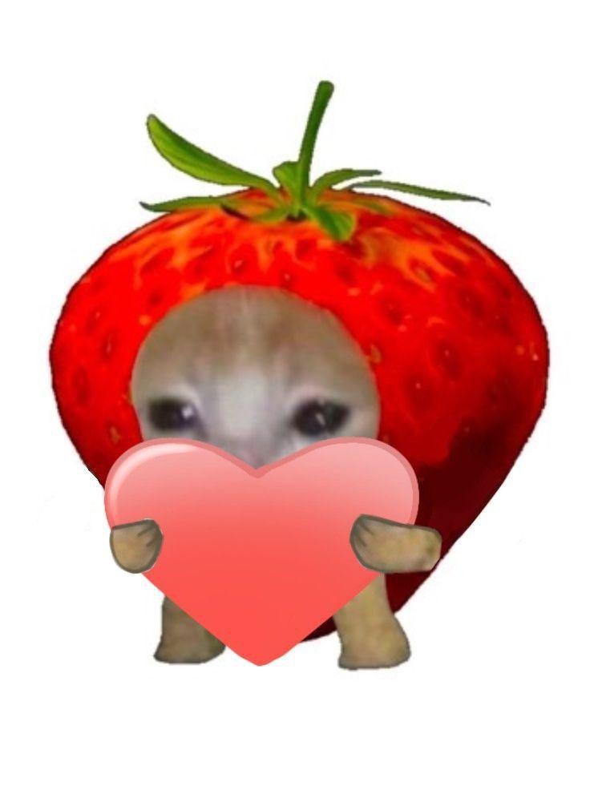

Управление: стрелки ← → или клавиши A / D, пробел — запуск шарика. Отбей шар и разбей все блоки.
Жизни: 3

Управление: стрелки ← → или клавиши A / D, пробел — запуск шарика. Отбей шар и разбей все блоки.
